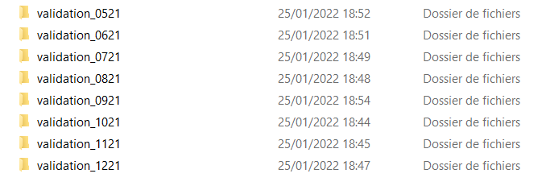
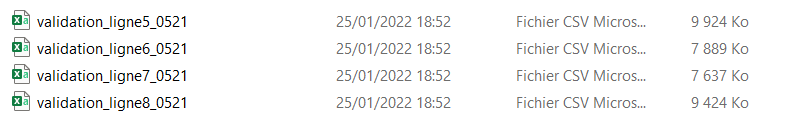
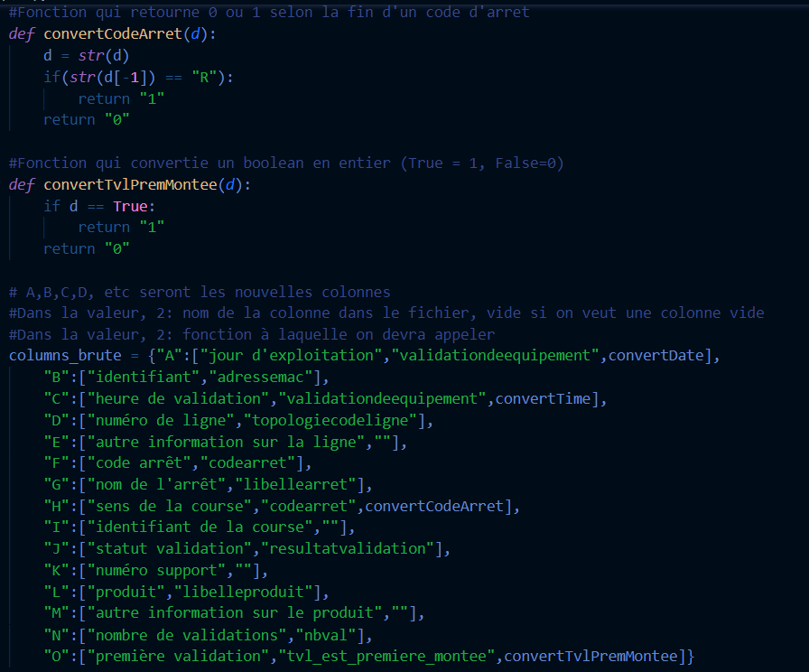
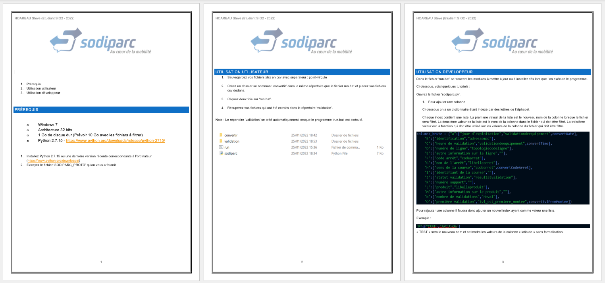
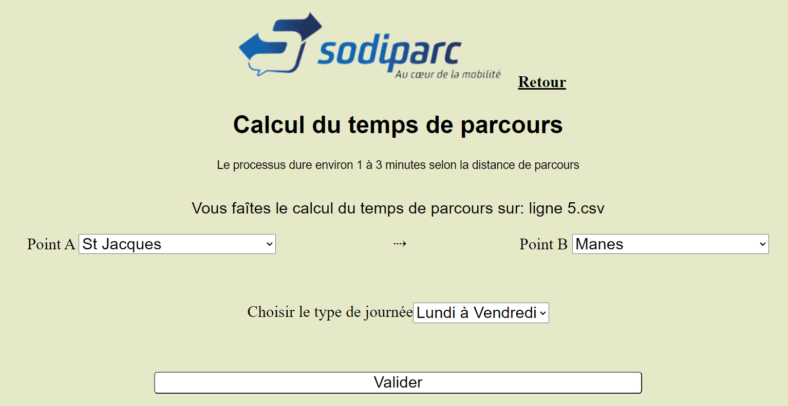
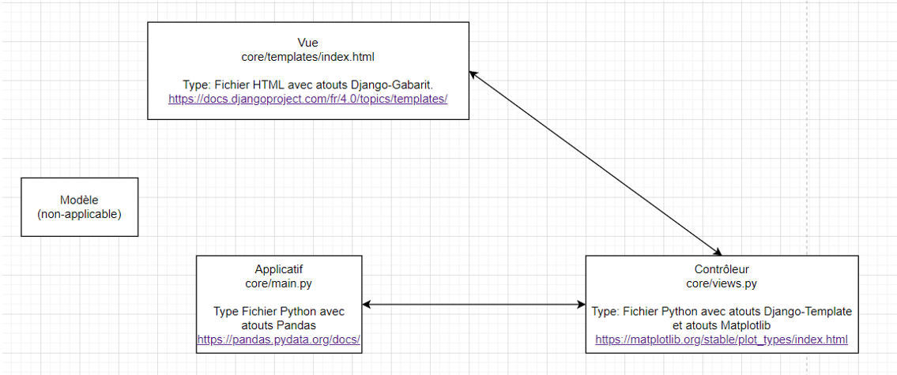
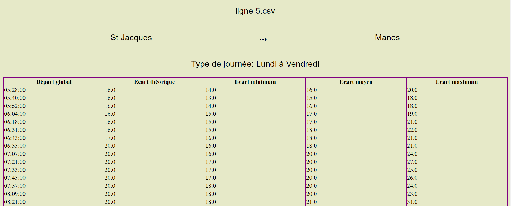
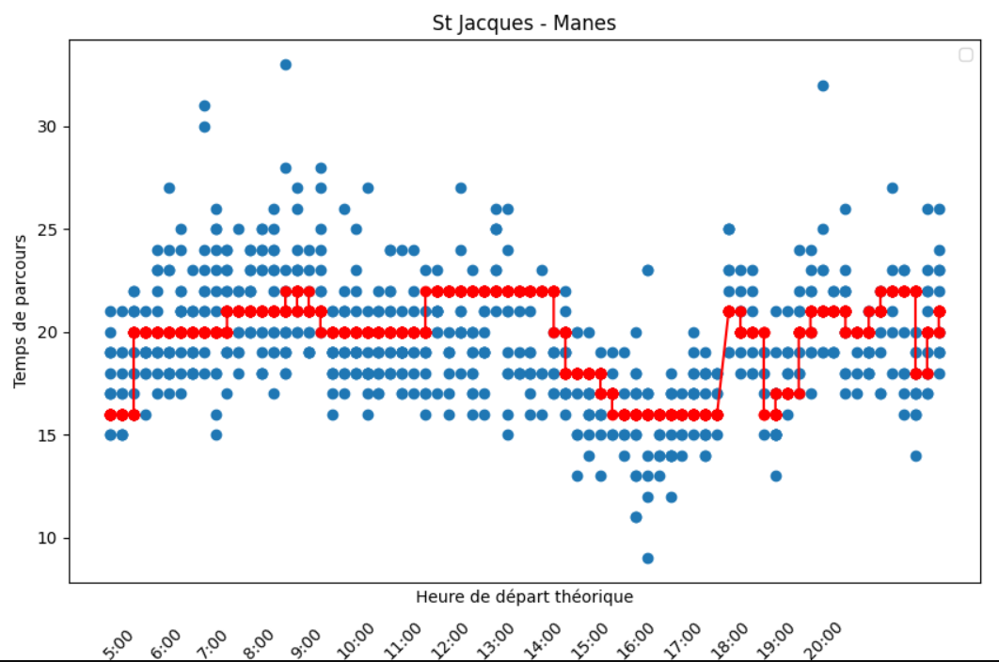
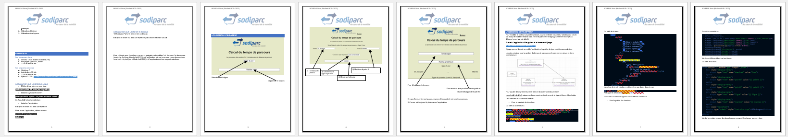

Introduction
SODIPARC m’a accueilli pour effectuer ce stage dans le bureau d’étude et méthodes, encadré professionnellement par le responsable de cette section.
Deux missions m’ont été attribuées :
- - Automatiser le filtrage des fichiers sources des données de validations de la billettique, pour intégrer à un outil.
- - Créer un tableau de bord permettant de choisir deux arrêts pour calculer le temps de parcours dans l’objectif de le comparer avec le temps de parcours théorique pour ensuite optimiser les horaires des bus.
La SODIPARC, c'est quoi?
- - SODIPARC est une Société Anonyme d’Economie qui est relié à la CINOR par un contrat (Délégation de Service Public).
- - SODIPARC gère le réseau de transport urbain : CITALIS, et CITYPARK
- - Située à Sainte-Clotilde
- - Mes missions se sont tournées vers le réseau CITALIS.
Mission 1 : Automatiser le filtrage et la sauvegarde de fichiers
Tâche 1 : Recherche



- Rechercher comment lire un fichier csv avec Python
- Rechercher comment fitrer les colonnes et la valeurs d'un fichier csv en Python
- Rechercher comment sauvegarder des fichiers csv avec Python
- Une solution choisie: Pandas et Numpy(Pour la sauvegarde)
Tâche 2 : Sprint(Codage)

- 13 jours de codage en autonomie(dont 1 journée en accompagné)
- Faire des tests
- Arriver à un application qui fonctionne
Tâche 3 : Rédaction

- Faire un document qui assiste l'utilisateur et le développeur à utiliser l'application
Mission 2 : Créer un tableau de bord permettant de choisir deux arrêts pour calculer le temps de parcours dans l’objectif de le comparer avec le temps de parcours théorique pour ensuite optimiser les horaires des bus.
Tâche 1 : Recherche

- Rechercher comment intégrer du Python dans un site WEB
- Une solution choisie: Django, Pandas et Matplotlib
Tâche 2 : Sprint(Codage)


- Intégrer du Python dans un site WEB
- Intégrer une architecture logicielle qui se base sur l'utilisation de l'application

- Il peut y avoir des erreurs, dans ce cas on mets de côté l'erreur et on s'intéresse à une autre mission
- Si l'erreur empêche de continuer d'avancer alors on fait tout pour la régler
Tâche 3 : Rédaction

- Faire un document qui assiste l'utilisateur et le développeur à utiliser l'application
- Faire des exemples dans ce document
Conclusion
Mon stage à la SODIPARC s’est très bien déroulé, j’avais quelque appréhension par rapport à mes missions, car je pensais qu’elles n’auraient pas correspondu au BTS SIO, finalement elles correspondent bien au BTS. Je suis très fier d’avoir aidé, échangé avec les différents collaborateurs. Je suis très fier aussi d’avoir pu développer des applications qui vont servir pour le futur de l’entreprise.
Compétences mobilisées durant ces activités :
- Concevoir et développer une solution applicative ;
- Assurer la maintenance corrective ou évolutive d’une solution applicative ;
- Organiser son développement professionnel ;
- Savoir travailler en autonomie ;
- Analyser des besoins ;
- Recherche de solutions ;
- Savoir effectuer des tests ;
- Rédiger un guide technique d’utilisateur (mode opératoire).
- Savoir respecter les délais ;
- Savoir être professionnel.